保护性设计
沿现有自然条件组织路径，减少对敏感环境的干预。
太湖荒野湿地景观设计
以尊重自然过程为起点，在湿地保护与公共活动之间建立适度联系。结合水循环、鸟类栖息地与架空步道，让观察、行走和停留融入场地原有的生态环境。
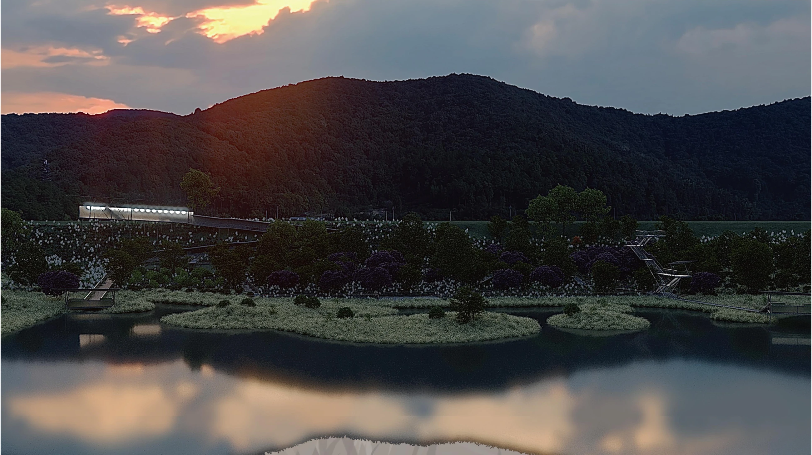
将区位、植被、水岸与既有用地作为规划依据，以保护湿地环境为前提，组织公共进入、观察和停留的路径。
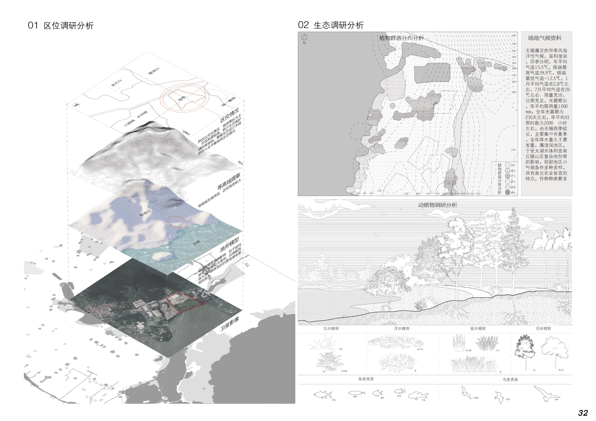
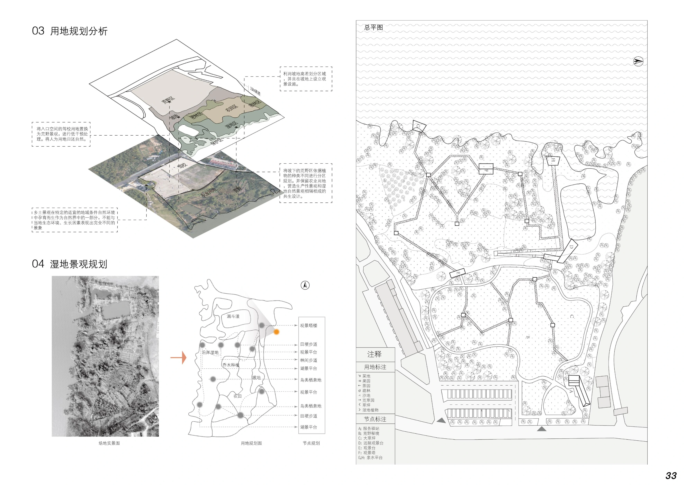
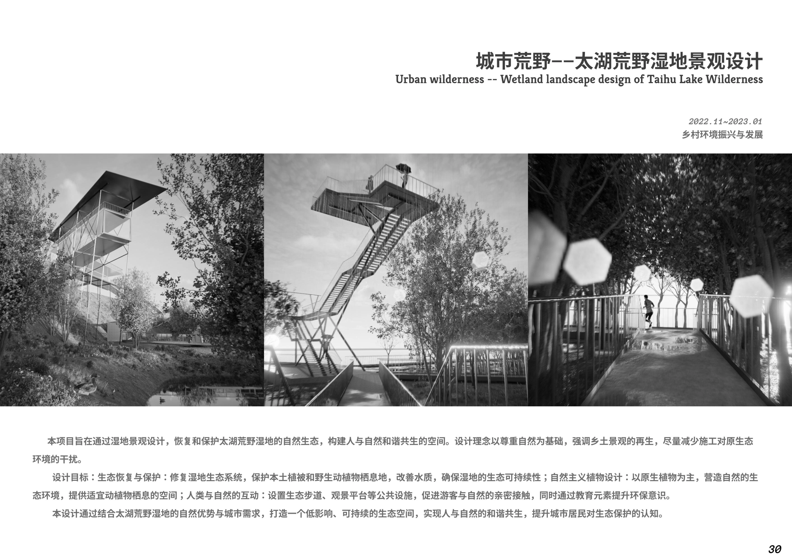
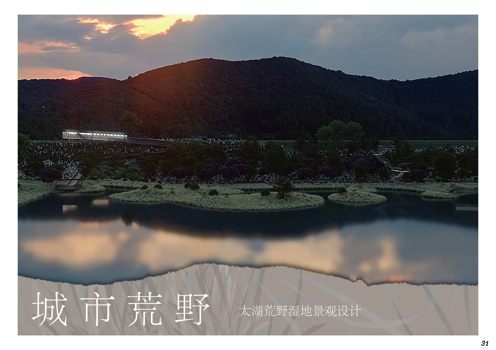
方案在保护性设计的基础上优化步道，用场地微高差组织水循环，并将植被、浅水与岛屿空间联系为栖息地网络。架空与低矮步道分别回应不同环境。
沿现有自然条件组织路径，减少对敏感环境的干预。
结合微地形与田埂组织水系和场地使用。
利用林地、岸线与浅水区提供多样的生态空间。
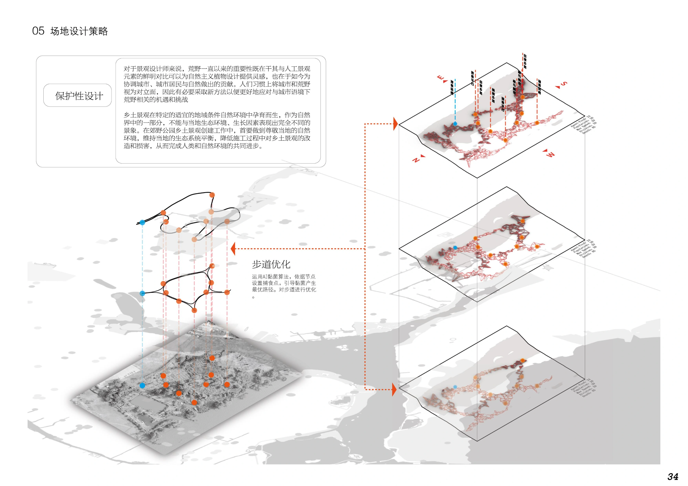
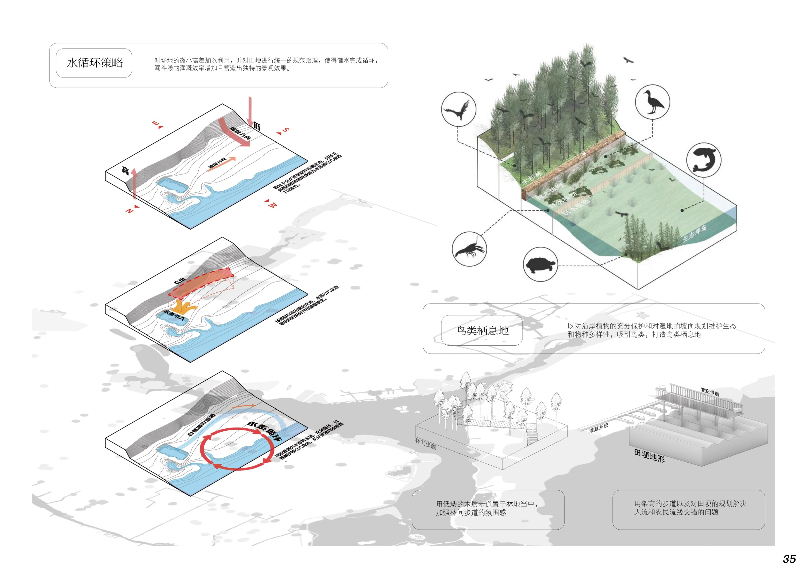
两组观景塔以不同的攀登路径和体量组织形成停留节点；栈道将观察点与湿地游线连接。图纸与效果对应展示结构轮廓、空间尺度和临水体验。
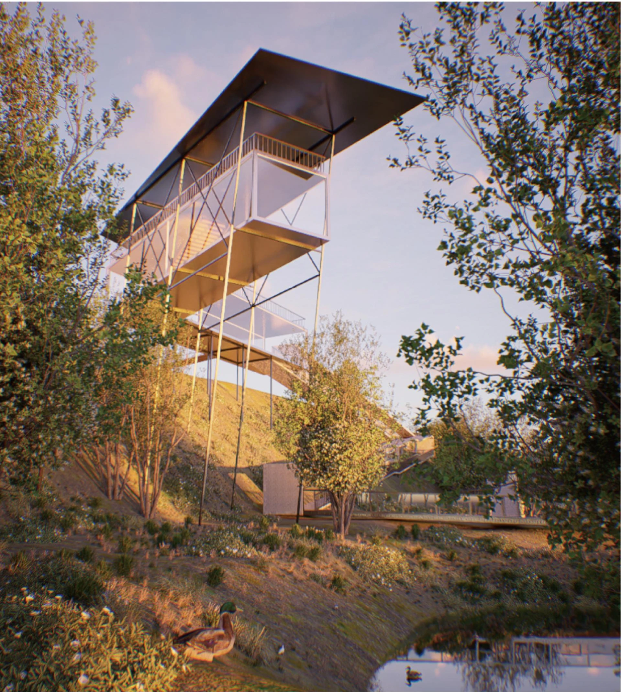
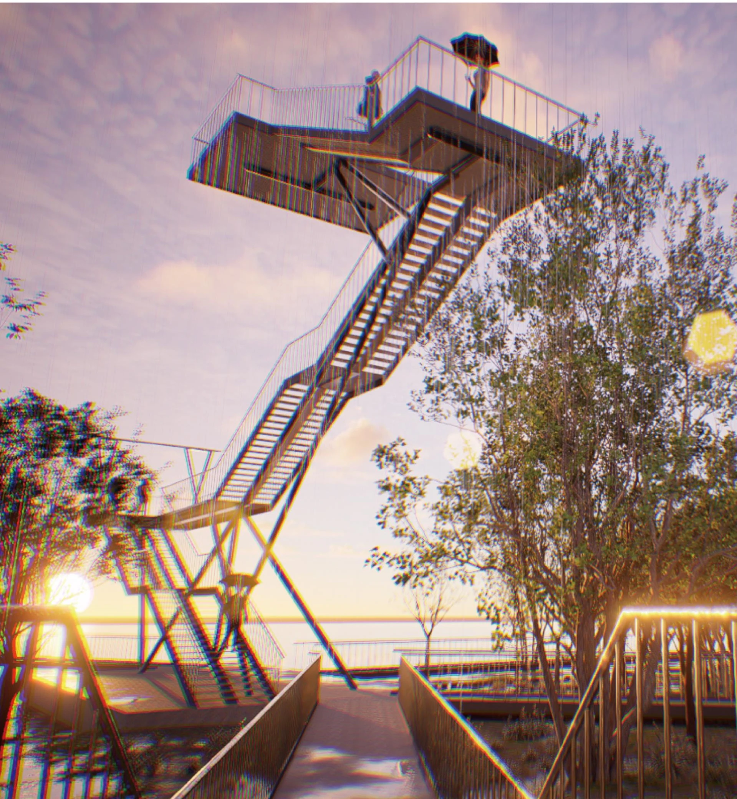
以高差、转折和夜间照明丰富步行体验，让游览路径与自然景观保持联系。
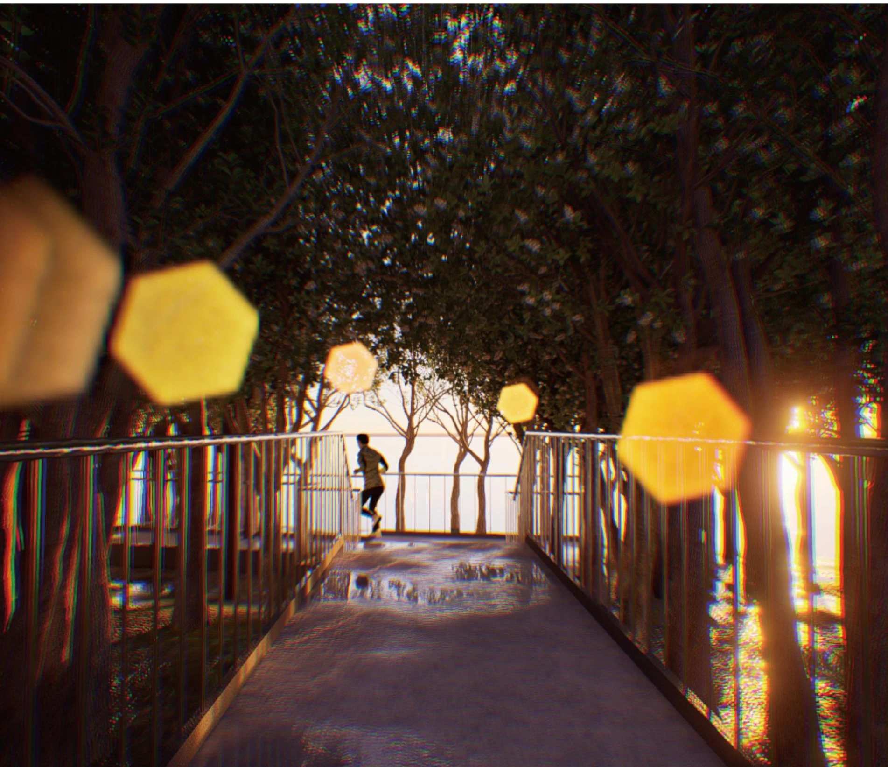
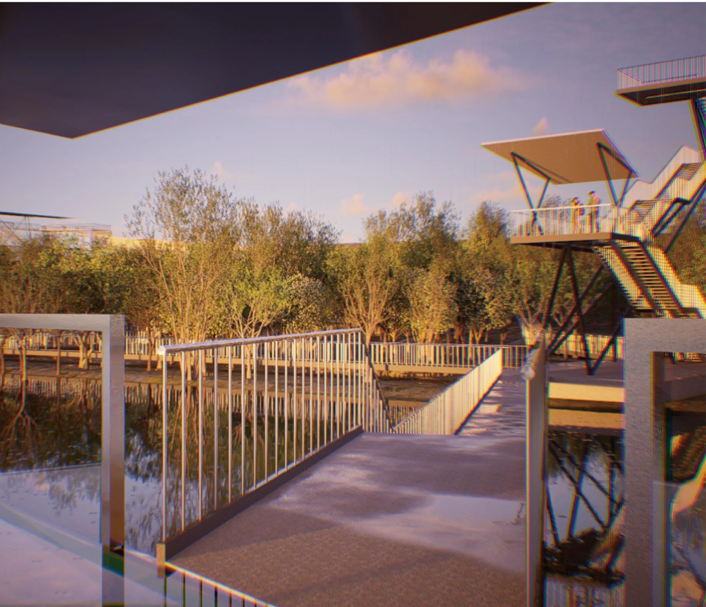
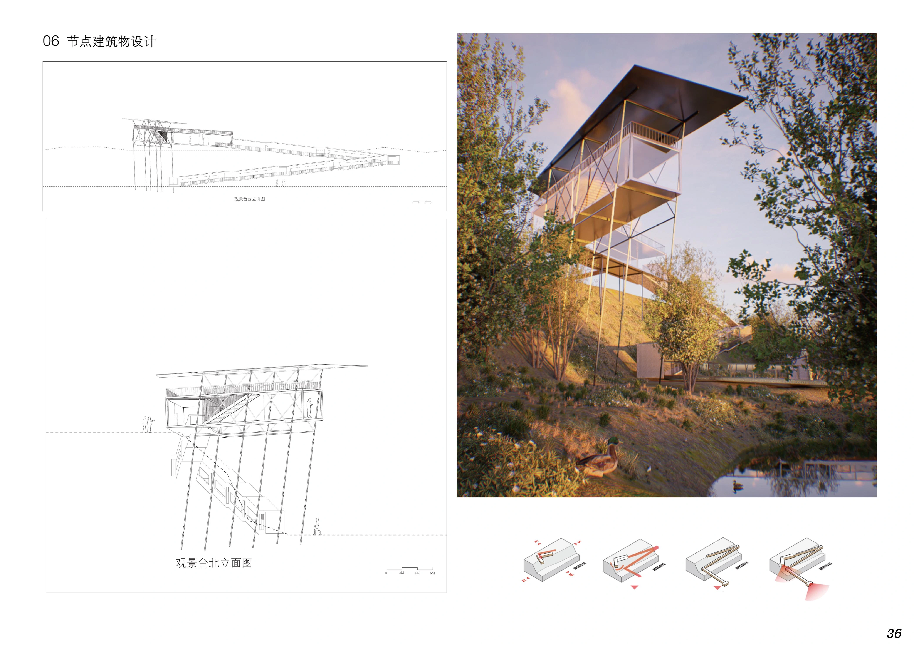
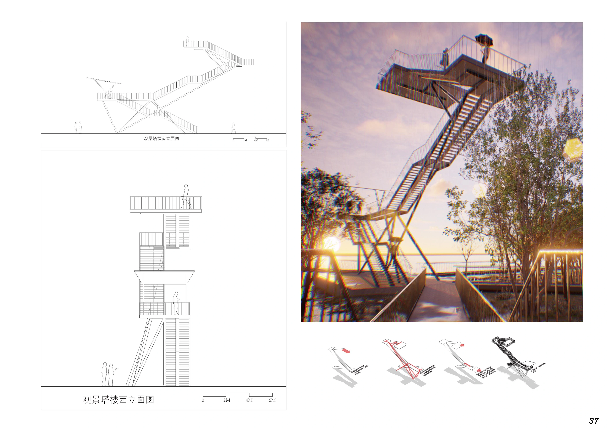
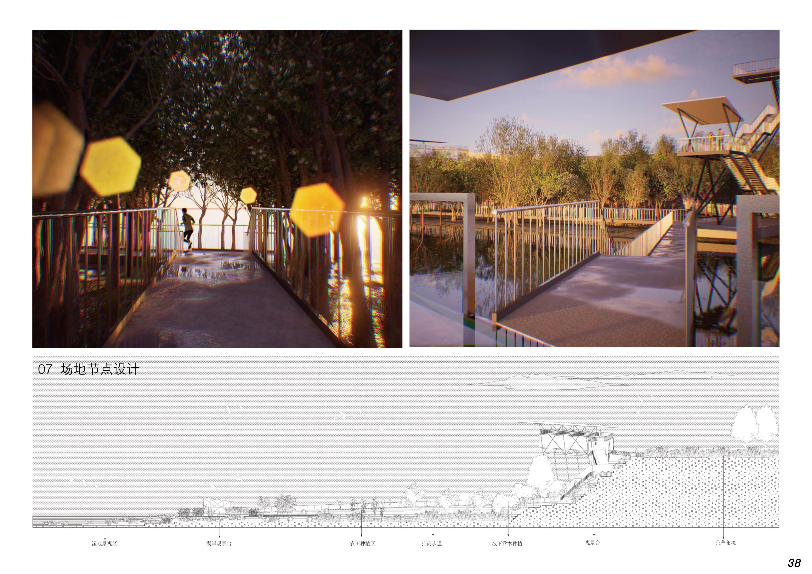
资料来源：《作品集2.27》第4章。图注采用 PDF 实际页序；设计说明依据原图面整理。